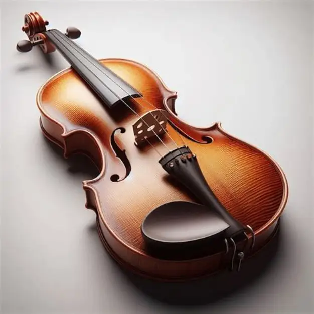

This website will teach you the basic steps of how a traditional violin is made.

Violins are made from spruce and maple. Luthiers choose wood that has been dried for years so it vibrates well.
Thin strips of maple are heated and bent around a mold. These curved pieces form the outline of the violin.
The front and back plates are carved into smooth arches. The inside is thinned carefully to help the violin vibrate properly.
The two f-shaped holes are cut into the top plate. Inside, a long wooden strip called the bass bar is added.
The ribs, top, and back are glued together to create the hollow body of the violin.
The neck and scroll are carved from maple. The scroll is decorative but traditional.
An ebony fingerboard is glued onto the neck because it is strong and smooth.
The violin is coated with thin layers of varnish to protect the wood and give it color.
The bridge, soundpost, pegs, strings, and tailpiece are added. Everything is adjusted so the violin sounds good.
Click the button to reveal.